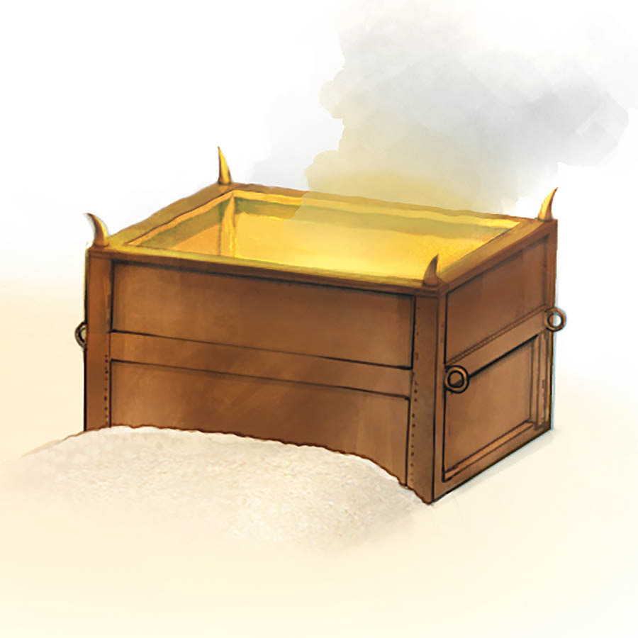

The tabernacle altars were built according to Jehovah’s instructions and had special significance.
Like the burning of skillfully blended incense, acceptable prayers offered up by Jehovah’s servants are pleasing to him

Jehovah accepted sacrifices made on the altar of burnt offering. Its location in front of the sanctuary reminds us that faith in the ransom sacrifice of Jesus is necessary for acceptance by God.—Joh 3:16-18; Heb 10:5-10
How can we prepare our prayers as incense before God?—Ps 141:2